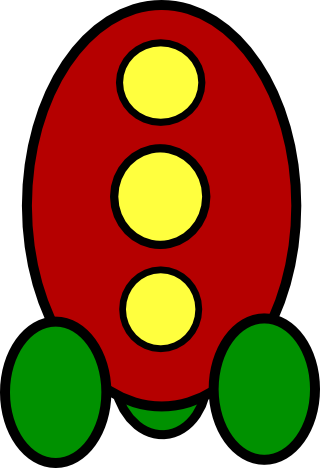

I participated in my second Ludum Dare 48 hour game-building compo this weekend, and this was my fourth attempt at building a game from scratch in 48 hours in HTML5/JS.
Each time I have approached the problem in a slightly different way, but I'm beginning to get the process sussed (with a few caveats) so let's break down my latest attempt (Web | Source) and see how it is put together.
I've tried a couple of approaches for this so far, one is to start with a set of 'base code' (written in advance either extracted from another project, or written especially for the 48 hour compo).
I've ended up settling for a halfway house, I have some libraries that I really like from JS/HTML development in general, and some libraries/components that I keep around for convenience.
Third party
Underscore - this is a library containing a load of polyfills for doing common operations in JS (iteration, binding, etc) - my favourite method is probably _.extend, which I'll cover in a bit.
jQuery - we all know what this is - to be honest, I use it for DOM selection and the most basic of manipulation only - as such it's a bit heavy-weight for what I need. Still - it's familiar to me and allows me to get started - can't say wrong with that.
Hand-rolled components
Swallow - Packaging up a directory as a JSON file and downloading it all-as-one might not be the most elegant/modern way of dealing with multiple assets but it at least allows an easy deterministic way of dealing with dependencies, and means that I forego a lot of the issues with playing Audio in browsers (creating a new audio file with a URL means the browser re-downloading the asset!).
Base64 encoding all the binary assets and getting on with life means not faffing around with them during the compo - which is a good thing.
// Build script
swallow.build({
in: 'assets',
out: 'site/assets.json'
});
// Client code
GlobalResources.loadPackage('assets.json', function() {
game.start();
});
GlobalResources.getImage('image.png');
GlobalResources.playSound('explosion');
Camera - Separation of in-game coordinates from the pixels being displayed on screen is pretty important because otherwise we limit ourselves to a specific resolution and aspect ratio, and prevent our application from being run at different resolutions on different screens.
The principle of this tiny piece of code is that rather than drawing using 'screen coordinates', we draw using 'world coordinates' and haven't got to any of the transformations ourselves in expensive JS.
For example,
context.fillRect(0, 0, 100, 100);
Would ordinarily fill a rectangle 100 pixels by 100 pixels at the top-left of the screen, but if we apply transforms to the underlying canvas as if we had a camera moving over it, using the following code
camera.lookAt(50, 50);
camera.zoomTo(100);
camera.fieldOfView(Math.PI / 4);
Then the same fillRect code will be drawing the same rectangle (roughly) in the middle of the screen.
The advantage of this code is that the same picture can be drawn whether the canvas is sized at 320x240, 640x480, 800x600 (and can even handle strange aspect ratios). In case of bad performance, the canvas size can be set to half the size of the actual display and upscaled automatically!
Eventable - I've found that messaging is the best way to keep the ability to crank out features without littering the codebase with conditionals and irrelevant code, I have a basic set of behaviours in an object called "Eventable" that looks like
on(event, callback, context)
onAny(callback, context)
off(event, callback, context)
offAny(callback, context)
I also have a basic Scene object, through which all entity events bubble up through for caretaker objects to deal with, consider the following scenario from my #LD23 game
EnemyFactory hooks 'Destroyed' event on Asteroid
asteroid.on('Destroyed', this.onAsteroidDestroyed, this);
Asteroid goes off and does its thing
Asteroid raises event like so:
this.raise('Destroyed');
EnemyFactory removes the Asteroid from the scene
They hooked the events from the scene when they were added to it like so
scene.on('Destroyed', this.onEntityDestroyed, this);
And in their respective methods they get to do
onEntityDestroyed: function(data, sender) {
this.createExplosion(sender.x, sender.y);
}
onEntityDestroyed: function(data, sender) {
this.increaseScore(sender.getPoints() * this.currentLevel);
}
onEntityDestroyed: function(data, sender) {
this.playSound('explosion', sender.x, sender.y);
}
Having the ability to slap on extra functionality without creating masses of extension code meant that throwing in power-ups was a simple matter of creating something to listen to destruction events and add new entities to the scene to represent as power-ups.
Keeping the UI updated looks something like this:
var Hud = function(scene) {
scene.autoHook(this);
this.score = $('#score');
this.health = $('#health');
this.energy = $('#energy');
};
Hud.prototype = {
onScoreChanged: function(score) {
this.score.text(score);
},
onHealthChanged: function(health, sender) {
if(sender.id !== 'player') return;
this.health.css('width', sender.percentageHealth() + '%');
},
onEnergyChanged: function(energy, sender) {
if(sender.id !== 'player') return;
this.energy.css('width', sender.percentageEnergy() + '%');
}
}
Hmmm, tidy.
I choose not to publish this as a library, because this is something specific to the way I like to work and everybody is either using one that already exists or are capable of writing on themselves.
Working in a single file
When working on my more long-term projects, I often use a dependency/module system like RequireJS to break up the project across multiple files (one-per-class type of thing)
When working on a 48 hour game jam, I find that just coding everything in a single file like a madman is really helpful providing I'm using a good text editor with the ability to search and jump around the document built in.
Working with "Classes"
I admit it, I'm a sucker for encapsulating state and behaviour into discrete little objects that I can create and throw around the place,
The thing is, because JS allows for duck-typing, this object flinging makes throwing things into a scene and performing operations on them pretty convenient.
For example, I have a scene object, which exposes the following methods, and at its most simplistic looks something like this:
add: function(entity) {
this.entities[entity.id] = entity;
},
remove: function(entity) {
delete this.entities[entity.id];
}
tick: function() {
this.eachEntity(this.entityTick);
},
entityTick: function(entity) {
if(entity.tick) entity.tick();
},
draw: function(context) {
this.eachEntity(this.entityDraw, context);
},
entityDraw: function(entity, context) {
if(entity.draw) entity.draw();
}
Now, in my long-term projects, drawing/logic/etc are just components that are attached to the entities, and the scene is certainly not responsible for this stuff - but for this kind of rapid-work project having something really simplistic really aids in the development process.
The important things of note, is above - we only care that an entity has a field called 'id', we don't care where it got it from - and if that entity has a draw method, we'll use it and if the entity has a tick method, we'll use that too.
I don't bother trying to emulate classic inheritance, even in something as simplistic as this it's not desirable (and leads to more complexity). I do however make judicious use of underscore's 'extend' method.
// Basic rendering functionality for a textured quad
var Quad = function() {
// stuff
};
Quad.prototype = {
draw: function(context) {}; // stuff
}
// A basic powerup which floats towards the player
var Powerup = function(image, x, y) {
Quad.call(this, image, x, y);
Eventable.call(this);
this.id = IdGenerator.Next("powerup");
};
Powerup.prototype = {
tick: function() {
this.moveTowardsPlayer();
},
notifyCollision: function(other) {
if(other.isPlayer())
this.bestow();
}
};
_.extend(Powerup.prototype, Quad.prototype, Eventable.prototype);
// An actual powerup
var DestructionFieldPickup = function(x, y) {
Powerup.call(this, "destructionfield.png", x, y );
};
DestructionFieldPickup.prototype = {
bestow: function() {
this.scene.addEntity(new DestructionField(this.x, this.y));
}
}
_.extend(DestructionFieldPickup.prototype, Powerup.prototype);
I'd usually shy away from such hierarchies, but in a 48 hour jam they're a really easy way of throwing functionality in with gay abandon (remember, I don't need to maintain this code, I don't need to remember that the Pickup somehow magically has an 'x' value 2 months later, I don't need to remember what fields have already been declared so not to overwrite them etc).
Working with such lightweight base components and with such explicit objects means that providing my codebase remains below 2000 lines of code (about the maximum deliverable for a solo 48 hour jam if I'm honest), I can keep it all in my head and not fuss around too much.
At least they're relatively small and (mostly) hide their data, and hold onto the functionality they expose in neat, readable blobs.
I'm not an artist, and I'm not a sound engineer either, I have found however that with Inkscape it is possible to create relatively non-sucky art with the combination of geometric shapes.

Including these is simple, as they're bundled up with Swallow - however, sounds are more tricky.
Sound on the internet SUCKS.
SUCKS. SUCKS SUCKS.
breath, basically you'll be fine if you use a combination of ogg vorbis and MP3, and don't worry about the older browsers.
In a little game like this, I don't worry about the cost and simply download both files all of the time (in swallow), I guess I could package them up individually and do a check on start-up, and perhaps a little library is warranted (either one on the internet or hand-rolled)
The code for playing a sound goes as follows therefore:
playSound: function(path) {
var player = new Audio();
if(player.canPlayType("audio/mpeg")) {
player.src = "data:audio/mpeg;base64," + this.findData(path + '.mp3');
} else {
player.src = "data:audio/ogg;base64," + this.findData(path + '.ogg');
}
player.volume = 0.5;
player.play();
}
This will work okay, as the data is cached (so no faffing with re-load pauses).
In a 48 hour game jam, I've found that productivity is much more important than the long-term maintainability of the code, but this does not mean abandoning some sensible software practises, as short term maintainability is still important (keeping 2000 lines of procedural spaghetti code in your head isn't quite as easy...).
Any questions? The code is over here, and the above should help with the navigation a bit...